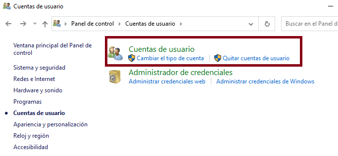
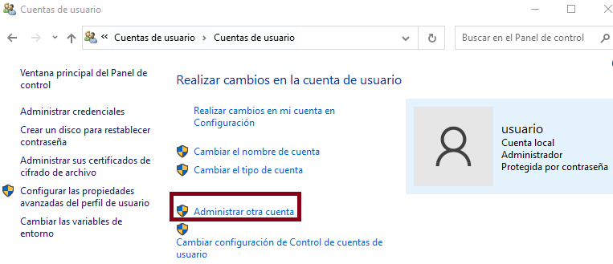
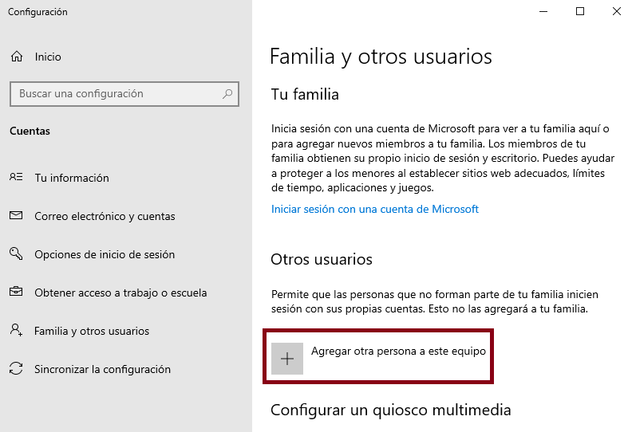
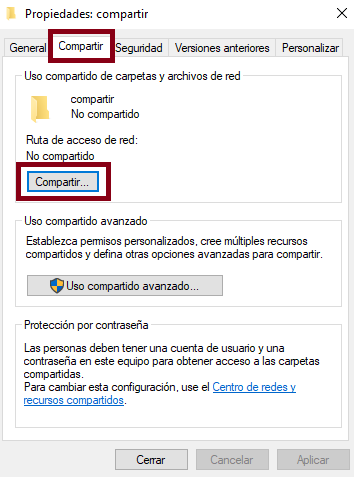
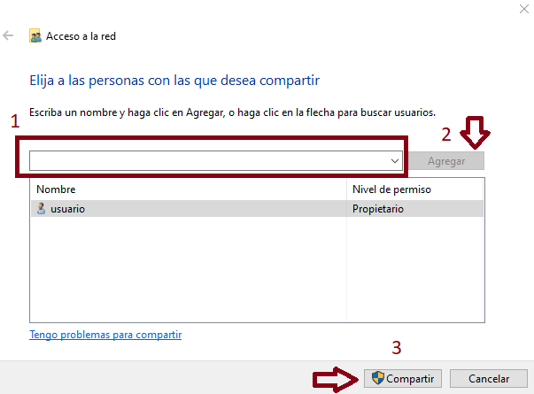

SOM
Programación estructurada en PowerShell
El primer paso que debemos realizar en nuestra máquina virtual de W10, es la ejecución del siguiente comando (en una ventana de powershell con permisos de administrador):
Declaración de variables
Por ejemplo:Entrada y salida
Para poder mostrar por pantalla el valor de una variable o de una operación utilizaremos la función:
Para poder recibir valores por teclado (y asignarlos a una variable), utilizaremos la función: Por ejemplo:Tip
La función Read-Host devuelve siempre una variable cadena de texto. Si queremos almacenar en nuestra variable un número entero tendremos que declararlo de forma explícita utilizando [int]
Argumentos de llamada a un script .ps1
Podemos pasarle a nuestro script los valores que queramos como argumentos:
Dentro de nuestro script, podremos recuperar estos valores de la siguiente manera:Operadores de comparación
Estos operadores los utilizaremos tanto en las sentencias condicionales como en los bucles:
-eq (equal to):igual a
-lt (less than): menos que
-gt (greater than): más que
-ge (greater than or equal to): mayor o igual a
-le (less than or equal to): menor o igual a
-ne (not equal to): no es igual a
Operaciones lógicas
-and Permite relacionar varios predicados condicionales. Para que el predicado global sea verdadero, tienen que ser verdaderos todos los predicados relacionados.
-or Permite relacionar varios predicados condicionales. Para que el predicado global sea verdadero, tiene que ser verdadero, al menos uno de los predicados relacionados.
if ( ($num1 -gt 5) -or ($num2 -gt 5) )
{
Write-Host "Al menos uno de los dos números son mayores que 5"
}
-not Permite negar predicados condicionales.
Sentencias condicionales
IF
IF-ELSE
$a=5
if($a -eq 5)
{
Write-Host "La variable a tiene asignado el valor 5"
}
else
{
Write-Host "La variable a no tiene asignado el valor 5"
}
ELSEIF
$a=6
if($a -eq 5)
{
Write-Host "La variable a tiene asignado el valor 5"
}
elseif($a -eq 6)
{
Write-Host "La variable a tiene asignado el valor 6"
}
else
{
Write-Host "La variable a no tiene asignado ni el valor 5 ni el 6"
}
SWITCH
$a=5
switch($a)
{
5
{
Write-Host "La variable a tiene asignado el valor 5"
break
}
6
{
Write-Host "La variable a tiene asignado el valor 6"
break
}
7
{
Write-Host "La variable a tiene asignado el valor 7"
break
}
default
{
Write-Host "La variable a no tiene asignado ni el valor 5 ni el 6 ni el 7"
}
}
Bucles (Sentencias de repetición)
WHILE
DO-WHILE
FOR
FOREACH
Función random
La función Get-Random nos permite obtener valores aleatorios.
#Obtener dos colores aleatorios de la lista
'verde', 'amarillo', 'rojo', 'azul', 'negro', 'blanco' | Get-Random -Count 2
#Reorganiza de forma aleatoria toda la lista de colores
'verde', 'amarillo', 'rojo', 'azul', 'negro', 'blanco' | Get-Random -Shuffle
Funciones de cadenas de caracteres
Length
Muestra la longitud de una cadena de caracteres
IndexOf
Muestra la posición de la primera ocurrencia de un carácter dentro de una cadena de texto. En caso de que el carácter no esté dentro de la cadena de texto devuelve -1.
Replace
Reemplaza una sección de una cadena de caracteres por otra.
Insert
Introduce en una posición de una cadena de texto, otra cadena de texto.
Equals
Evalúa si una cadena de caracteres es igual a otra. Devuelve los valores booleanos True o False.
$c = 'casa'
$c1 = 'casa'
$c2 = 'pasa'
$c.equals('casa')
True
$c.equals('pasa')
False
$c.equals($c2)
False
$c.equals($c1)
True
Split y Substring
Lo veremos en próximos capítulos.
Ejercicios resueltos
Contador de 1 a 10 utilizando el bucle WHILE
Sensor de temperatura con ELSEIF
[int]$temp = Read-Host "Por favor, introduzca la temperatura"
if ($temp -le 10)
{
Write-Host "Frío"
}
elseif ($temp -gt 10 -and $temp -le 18)
{
Write-Host "Fresquito"
}
elseif ($temp -gt 18 -and $temp -le 24)
{
Write-Host "Temperatura agradable"
}
else
{
Write-Host "Calor"
}
Semáforo con SWITCH
$color = $args[0]
switch($color)
{
'verde'
{
Write-Host "Pasar"
break
}
'amarillo'
{
Write-Host "Precaución"
break
}
'rojo'
{
Write-Host "Parar"
break
}
default
{
Write-Host "Color inválido"
}
}
Recorrer una lista utilizando el bucle FOR
$frutas = 'fresa', 'manzana', 'platano', 'melon', 'naranja', 'limon'
for ($i=0; $i -lt $frutas.length; $i++)
{
Write-Host $frutas[$i]
}
Obtener N elementos de una lista de manera aleatoria
$frutas = 'fresa', 'manzana', 'platano', 'melon', 'naranja', 'limon'
[int]$numFrutas = Read-Host "¿Cuántas frutas quiere?"
$frutas | Get-Random -Count $numFrutas
Comprobar si una letra está presente en una palabra
$palabra = 'casa'
$letra = Read-Host "Por favor, introduzca una letra"
if ($palabra.IndexOf($letra) -ne -1 )
{
Write-Host "La letra está presente en la palabra"
}
else
{
Write-Host "La letra NO está presente en la palabra"
}
Eliminar de una lista las palabras que comienzan por vocal
$alumnos = 'Iker', 'Desirée', 'Andrei', 'Pablo', 'Aitor', 'Manuel', 'Mario', 'Daniel', 'Edwar', 'Nicolás'
for ($i=0; $i -lt $alumnos.length; $i++)
{
$alumno = $alumnos[$i]
$pl = $alumno[0]
if ($pl -eq 'a' -or $pl -eq 'e' -or $pl -eq 'i' -or $pl -eq 'o' -or $pl -eq 'u')
{
$alumnos[$i] = '----'
}
}
$alumnos
Mostrar los personajes cuyo nombre y apellido comienzan por la misma letra
$personajes = 'Peter Parker', 'Hercule Poirot', 'Stephen Strange', 'Harry Potter', 'Reed Richards', 'Matt Murdock', 'Oliver Twist'
$personaje = ''
$espacio = -1
$primeraLetraNombre = ''
for ($i=0;$i -lt $personajes.length;$i++)
{
$personaje = $personajes[$i]
$primeraLetraNombre = $personaje[0]
for ($j = 0; $j -lt $personaje.length; $j++)
{
if ($personaje[$j] -eq ' ')
{
$espacio = $j
}
}
if ($primeraLetraNombre -eq $personaje[$espacio + 1])
{
Write-Host $personaje
}
}
Examen 07/03/2022
Pregunta 1 - Escribe un script que reciba 3 argumentos (utiliza $args): Le preguntará al usuari@ su nombre y apellidos y se lo mostrará por pantalla con el siguiente formato: apellido1 apellido2, nombre
(Alternativa) Utilizando Read-Host y 3 variables$nombre = Read-Host "Introduzca su nombre"
$apell1 = Read-Host "Introduzca 1er apellido"
$apell2 = Read-Host "Introduzca 2º apellido"
Write-Host $apell1 $apell2', '$nombre
Pregunta 2 - Escribe un script que genere un número aleatorio entre 0 y 50. Si el número resultante es 10 20 30 o 40 escribe “¡Has tenido suerte!”
$num = Get-Random -Minimum 0 -Maximum 50
if ($num -eq 10 -or $num -eq 20 -or $num -eq 30 -or $num -eq 40)
{
Write-Host "Has tenido suerte"
}
Pregunta 3 - Escribe un script calculadora en el que declares 2 variables (serán los operandos) y admita un argumento para seleccionar el tipo de operación a realizar mediante la estructura switch. El/la usuari@ puede elegir entre la operación de suma y la de multiplicación.
$op1 = 2
$op2 = 3
$op = $args[0]
switch($op)
{
+
{
Write-Host ($op1 + $op2)
break
}
*
{
Write-Host ($op1 * $op2)
break
}
}
Pregunta 4 - Escribe un script que muestre los números del 15 al 1(orden descendente) mediante un bucle.
Pregunta 5 - Script que muestre únicamente las palabras en plural (terminan por la letra s) de la siguiente lista: casa, aceitunas, verdura, futbolista, pilas, cosas
$lista = 'casa', 'aceitunas', 'verdura', 'futbolista', 'pilas', 'cosas'
for($i = 0; $i -lt $lista.length; $i++)
{
$palabra = $lista[$i]
if ($palabra[$palabra.length-1] -eq 's')
{
Write-Host $palabra
}
}
Ejercicios repaso recuperación 21/03/2022
1. Script que pinte todos los argumentos mediante un bucle con la siguiente salida:
Argumento 1 - valorArgumento1 Argumento 2 - valorArgumento2 Argumento 3 - valorArgumento3 Argumento N - valorArgumentoN
2. Crea una lista con las letras del abecedario:
- En una primera versión: Muestra la primera, la quinta y la octava letra. En una segunda versión:
- Pregúntale al usuari@ cuantas letras aleatorias quiere obtener.
- Si alguna de las letras obtenidas es una vocal, muestra el siguiente mensaje: Has tenido suerte!
3. Crea un script que convierta una nota numérica a formato texto:
- Si la nota es menor que 5 - Escribe suspenso
- Si la nota es mayor o igual a 5 y menor que 6 - Escribe aprobado
- Si la nota es mayor o igual a 6 y menor que 7 - Escribe bien
- Si la nota es mayor o igual a 7 y menor que 9 - Escribe notable
- Si la nota es mayor o igual a 9 y menor que 10 - Escribe sobresaliente
- Si la nota es igual a 10 - Escribe Matrícula de honor
- Si la nota está fuera de estos rangos - Escribe valor inválido
4. Crea un script que contenga un bucle que muestre los números impares del 1 al 19
Comandos Powershell
New-Item
Nos permite crear ficheros -ItemType "file" y carpetas -ItemType "directory" especificando la ruta del nuevo elemento mediante -Path.
Ejemplos
Remove-Item
Permite eliminar ficheros y carpetas. Ejemplos
Copy-Item
Permite copiar ficheros y carpetas en nuestro sistema de archivos. Ejemplos
Move-Item
Permite mover ficheros y carpetas en nuestro sistema de archivos. Ejemplos
Compress-Archive
Nos permite comprimir archivos y carpetas. Ejemplos
Expand-Archive
Nos permite descomprimir archivos .zip. Ejemplo
Add-Content
Nos permite añadir texto -Value a un fichero -Path.
Ejemplos
Get-Content
Permite visualizar el contenido de un fichero de texto. Ejemplos
Clear-Content
Permite eliminar el contenido de un fichero de texto. Ejemplos
Get-Date
Muestra la fecha actual en distintos formatos Ejemplos
Ejercicio resuelto
- Crea la carpeta ejercicioRepaso en el escritorio con el siguiente contenido:
uno.txt
dos.html
tres.txt
cuatro.htmlNew-Item -Path C:\Users\usuario\Desktop\ejercicioRepaso -ItemType "directory" New-Item -Path C:\Users\usuario\Desktop\ejercicioRepaso\uno.txt -ItemType "file" New-Item -Path C:\Users\usuario\Desktop\ejercicioRepaso\dos.html -ItemType "file" New-Item -Path C:\Users\usuario\Desktop\ejercicioRepaso\tres.txt -ItemType "file" New-Item -Path C:\Users\usuario\Desktop\ejercicioRepaso\cuatro.html -ItemType "file" - Crea una carpeta en Documentos llamada web y copia los archivos .html de ejercicioRepaso a esta nueva carpeta:
- Comprime la carpeta web en Documentos:
- Mueve la carpeta web.zip de Documentos a Escritorio:
- Elimina la carpeta web (y todo su contenido) de Documentos:
- Descomprime web.zip (en el Escritorio):
Ejemplo de menú simple en PowerShell
[int]$opcion = -1
while ($opcion -ne 4) {
Write-Host "1. Opción 1"
Write-Host "2. Opción 2"
Write-Host "3. Opción 3"
Write-Host "4. Salir"
$opcion = Read-Host "Seleccione una opción"
switch ($opcion) {
1{Write-Host "Seleccionaste la opcion 1"}
2{Write-Host "Seleccionaste la opcion 2"}
3{Write-Host "Seleccionaste la opcion 3"}
4{Write-Host "Saliendo del script..."}
}
}
Creación de una cuenta de usuario en W10
Paso 1:

Paso 2:

Paso 3:

Paso 4:

Paso 5:

Compartir una carpeta en W10
Paso 1:
Click derecho ratón encima de la carpeta a compartir -> Propiedades

Paso 2:
1. Seleccionamos el usuario con el que queremos compartir la carpeta.
2. Clickamos en el botón agregar.
3. Clickamos en el botón compartir.

Ubuntu
Creación de una carpeta
Creación de un documento
Eliminación de un documento/carpeta
En caso de querer utilizar este comando con una carpeta, debemos incluir el argumento -RCopiar documento/carpeta
Mover documento/carpeta
Comprimir archivos/carpetas
Descomprimir archivos con extensión .tar.gz en el directorio actual
Descomprimir archivos con extensión .tar.gz en una ruta determinada
Creación de un grupo en Linux
Podemos consultar los grupos existentes en nuestra sistema en /etc/groupCreación de un usuario en Linux
Parámetros opcionales:-m crea una carpeta home para el nuevo usuario en /home/nombreUsuario-G añade al usuario recién creado a un grupo que exista en el sistema-s Estable la terminal por defecto del usuario Podemos consultar los usuarios existentes en nuestra sistema en /etc/passwd
Establecer la contraseña
Añadir un usuario a un grupo
Listar los permisos de los archivos/carpetas contenidos en el directorio actual
Establecer los permisos de un archivo/carpeta
Explicación + EjemplosEn caso de querer utilizar este comando con una carpeta, debemos incluir el argumento -R